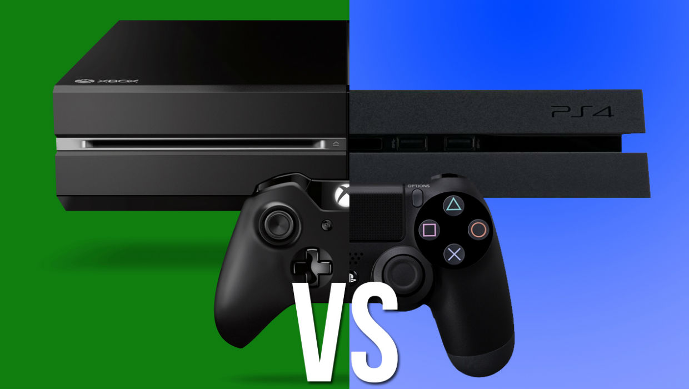
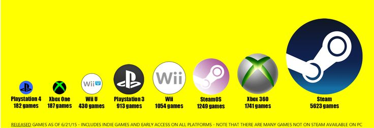

About PC Gaming
A gaming computer (also gaming rig and sometimes called a gaming PC)
is a personal computer designed for playing computationally demanding video games.
Gaming computers are very similar to conventional PCs, with the main difference
being the addition of gaming-oriented components such as one or more high-end video cards.
Gaming computers are often associated with enthusiast computing due to an overlap in interests.
However, while a gaming PC is built to achieve performance for actual gameplay, enthusiast PCs
are built to maximize performance, using games as a benchmark. The difference between the two
carries a large discrepancy in the cost of the system. Whereas enthusiast PCs are high-end by definition,
gaming PCs can be subdivided into low-end, mid-range, and high-end segments. Contrary to the popular
misconception that PC gaming is inextricably tied to high-priced enthusiast computing,
video card manufacturers earn the bulk of their revenue from their low-end and mid-range offerings.
Because of the large variety of parts that can go into a computer built to play video games,
gaming computers are typically custom-made, rather than pre-assembled, either by gaming and
hardware enthusiasts or by companies that specialize in producing custom gaming machines.
In order to generate interest, gaming computer manufacturers that sell complete systems
often produce boutique models, allowing them to compete on aesthetic design in addition
to the hardware inside.
Why PC over consoles?


In summary, why should I choose a PC over a console? What can it possibly offer?
PCs are awesome machines for gaming, work, and entertainment alike for many reasons. This includes, but is not limited to, the following reasons listed below. The sources that follow each bullet point should link to sections within this page, which in turn contain all the sources you'll probably want to see.
PC gaming as a whole is much cheaper than console gaming. Especially in the long run, it can be less than half of what a console will cost you. Hidden fees, price hikes, and royalties are abundant for gamers AND developers in the console industry. [1] [2]
PC hardware offers better bang-for-buck & value than console hardware (same performance for less money, more performance for the same money, or much more performance for a bit more money). [1]
PCs have the freedom to upgrade whenever YOU decide to, not when Sony or Microsoft decide to. If you just got a big paycheck and wanted to sell your R7 260 to a friend for $50 and buy an R9 380 for $150 tomorrow, you could do it.
PCs give you full internal and external control over the graphical fidelity triangle. Consoles can control neither.
PCs easily work with TVs and monitors, and even multiple of each.
PCs can play nearly every old PC and console game ever made, thanks to its tremendous legacy support, emulator availability, and GOG .
PCs can use nearly every console controller ever made, modern ones (PS3/PS4/X360/XO) work without even needing a USB adapter. [1]
PC games offer a clearer image thanks to native resolution and its ability to adjust to any display its plugged into. Console games don't allow resolution adjustments, and will lock to whatever the developer arbitrarily chose. This means that lower resolution displays offer no performance benefit like they do on PCs, because the resolution is never lowered to spare some workload on the GPU (which, on a PC, would mean it could render frames faster). [1]
Gaming services and "social services" on the PC are completely free, even with online play (Steam, Galaxy, Desura, Mumble, etc)
Gaming services on the PC offer more functionality than what you pay for on a console
PCs have better better multiplayer support (LAN, 16x local multiplayer on the same machine with softXpand)
Using a modern budget GPU yields around 60 frames per second during gameplay with recent game releases. Consoles can barely reach 30FPS most of the time.
Not only can PC's be used for education, entertainment, gaming, and content creation... they're the best at all of these things.
PCs are much more powerful than the PS4 or XBox One at the same (traditionally believe to be affordable!) price point
More exclusives than all the current-gen consoles combined
More highly-rated exclusives
PC games have free modifications and enhancements available. Old games and new games alike have player-made content, graphical enhancements, and additions available for free. Even Minecraft. [1]
More games, much larger library
More exclusive games
Healthy independent developer scene
Lots of free games
Free abandonware titles
PCs can emulate almost any handheld and stationary console games using freely available emulators. Sometimes even at higher framerates, detail levels, and with better input than the original console permitted! [1] [1] [2]
Increasingly cheaper hardware for the price as new GPUs are released
Big Picture mode for couch gaming
Easier to repair and highly modular
Backward and forward hardware compatibility of ~2 years
No punishments for repairing
Can be upgraded if desired
Easier to upgrade
Better price-performance than consoles
Higher framerates (smoother )
Higher resolutions than consoles (such as 1080p, 1440p, 1600p, 4k, and 8k!) if your display supports it and you have GPU power you're willing to spare. Consoles struggle, even at 720-900p !
Higher graphical details (lighting, textures, foliage, particles, shading, weather)
You're probably going to own some sort of PC anyways, why not pay a bit more on top to make it a gaming machine? That alone makes it cheaper than a console.
The Personal Computer is a constantly evolving platform. It grows in power, capability, and value every single year. It's also free of the control of any single entity, which are why many of these advantages now exist. Rather than being regulated by a single company, control and improvement influence over the PC belongs to everyone equally. Even you, the consumers, have the full freedom to create or sell software, games, and hardware for it. It's being constantly improved by competing companies and individuals all over the spectrum, and all of them are trying to offer you (and potential developers) the best experience possible. Just keep reading!